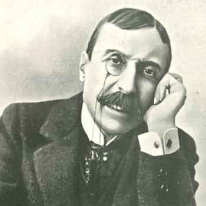

Eça de Queirós
1845–1900 • Póvoa de Varzim / Portugal
José Maria de Eça de Queirós foi um escritor e diplomata português, nascido em 25 de novembro de 1845, na cidade de Póvoa de Varzim, em Portugal. É considerado um dos principais representantes do Realismo na literatura portuguesa, destacando-se pela crítica aos costumes, às instituições e às desigualdades da sociedade de seu tempo. Formou-se em Direito pela Universidade de Coimbra e iniciou sua carreira literária e jornalística ainda jovem. Sua participação nas Conferências do Casino, em 1871, contribuiu para a divulgação das ideias realistas em Portugal. Entre suas obras mais importantes estão O Crime do Padre Amaro (1875), O Primo Basílio (1878) e Os Maias (1888), romances nos quais retratou a hipocrisia social, a influência da religião, os conflitos familiares e a decadência da burguesia portuguesa. Além da literatura, construiu carreira diplomática, atuando em países como Cuba, Inglaterra e França. Faleceu em 16 de agosto de 1900, em Neuilly-sur-Seine, na França.
Principais Obras
Temas Recorrentes
A hipocrisia social, a corrupção, a influência da religião na sociedade, o adultério, os conflitos familiares, as desigualdades sociais e a decadência da burguesia portuguesa. Suas narrativas também abordam o contraste entre aparência e realidade, a crítica às instituições políticas e religiosas e os comportamentos da sociedade portuguesa do século XIX.
Características de Escrita
Sua escrita apresenta características marcantes do Realismo, como a observação crítica da sociedade, a análise psicológica das personagens e a representação de situações cotidianas. Utilizava ironia, humor e sátira para questionar comportamentos e instituições sociais. Sua linguagem é rica em descrições, diálogos e detalhes dos ambientes, contribuindo para a construção de personagens complexas e situações que revelam as contradições da sociedade. Em suas obras, também se destaca a crítica aos valores da burguesia e ao conservadorismo de sua época.
Influências Artísticas
Sua produção literária foi influenciada pelo Realismo europeu, especialmente pelas ideias de escritores como Gustave Flaubert e Honoré de Balzac. Também recebeu influência do pensamento crítico e científico do século XIX, que valorizava a observação da realidade e a análise dos comportamentos sociais. As discussões sobre a renovação cultural e literária portuguesa, especialmente as ideias apresentadas nas Conferências do Casino, contribuíram para sua formação intelectual. Sua obra dialoga com as transformações sociais, políticas e culturais da Europa oitocentista.
"Sobre a nudez forte da verdade, o manto diáfano da fantasia."